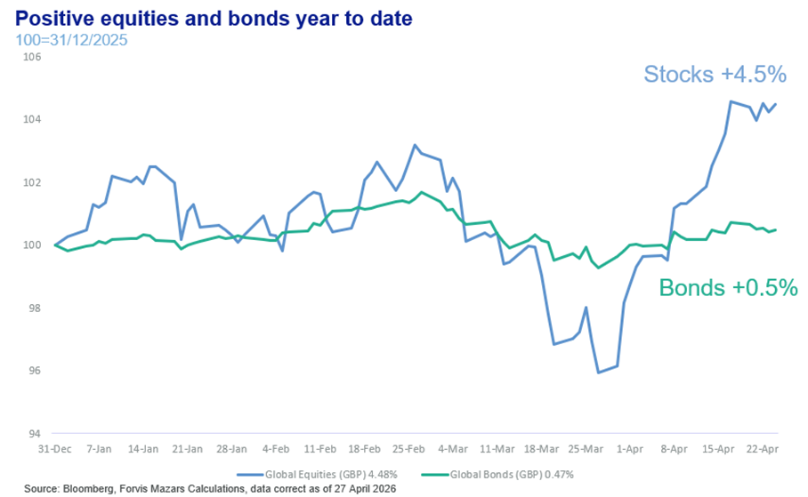
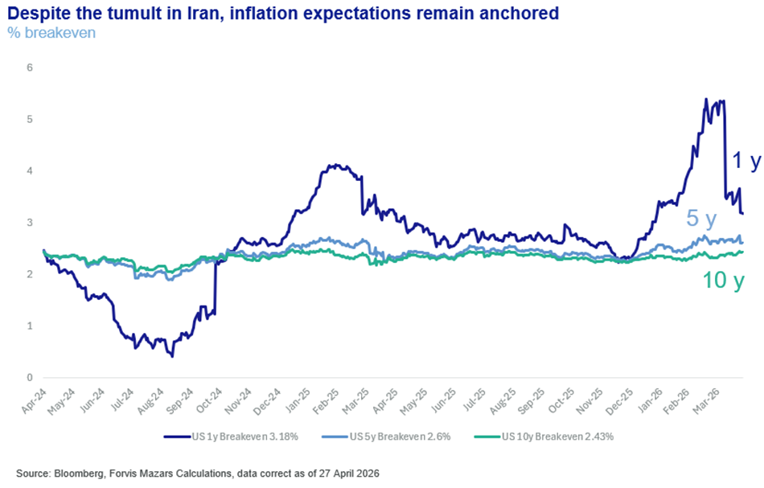
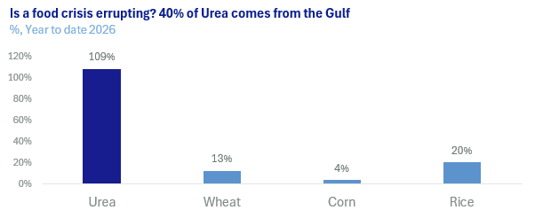

What happens when an unstoppable force (the present US government) meets an immovable object (the Iranian Revolutionary Guards Corps)?
For one, negotiations can become difficult. When playing chess, the opening moves are usually choreographed. Each player goes into the game with a set of ideas as to how they want to approach it, based on years of previous experience. We are no longer, however, in the opening, but squarely in the mid-game. This is the part when the strategic options of both sides now give way to more tactical moves as both players battle for key position, and often intimidation, and thus more unpredictable outcomes.
Meanwhile, the Strait of Hormuz remains closed for an eighth week, even as equity and bond markets seem comfortable with the idea of, or at least not pricing in, potentially higher inflation and supply chain dislocations. The US and Iran are trying to sit at the negotiating table without any party conveying a sense of urgency to the other. Realistically, looking at the participants, finding common diplomatic ground may be as difficult, if not more, than pursuing military options.
Which means we may need to wait longer for a satisfactory resolution, as both sides try to make each other relent.
In the past few weeks, we discussed extensively why financial markets haven’t reacted negatively to what looks like a progressively worsening economic scenario. Equities are the asset of preference in times of uncertain inflation. Additionally, Q1 earnings for US companies have been much better than anticipated so far, boosting the value of the stock market.

Bonds may be somewhat under-pricing the probability of higher inflation over the shorter term, to be sure, but they seem buoyed by the prevalent narrative of a solution in the near term.

Part of the general positive stance could well be that the truce remains in effect, and as long as that happens, the possibility for a resolution increases, even as both sides have more time to prepare for what comes next.
In early April, we laid out our core scenarios: A 75% probability of an eventual resolution without significant repercussions beyond 2026, a 10% probability of a very favourable resolution which would allow oil prices to de-escalate quickly, a 5% scenario where Hormuz becomes a proper international crisis with severe market and economic repercussions, and a 10% probability reserved for all other permutations of scenarios.
We can’t be certain about the market outcomes. Even in adverse economic scenarios, financial markets are always supported by central banks.
However, where we are paying more attention right now is the real economy. Rises in the price of fertilisers and food suggest that things can get worse in a non-linear way, starting with poorer countries.

We think that almost certainly this would translate into higher food inflation, if not outright shortages, for developed countries.
Mohamed El Erian, a world-renowned economist, has suggested a framework of four phases when dealing with crises.
Phase 1:Narrow price shock, energy and borrowing costs. This is based on the belief that the war will end quickly.
Phase 2:Broader inflationary hit. We are already seeing some evidence, with inflation rising across the board. However, this would matter less. What’s more important is what consumers do next. Do they just pay the extra energy prices without reducing demand for other goods? Or do we see overall lower demand to compensate? Which brings us to phase 3.
Phase 3:Demand destruction. At this point, consumers and various actors anticipate wider disturbance, even if hostilities end today. We have already seen the beginnings of such reactions, with demand for some goods which have seen sharp price rises falling quickly.
Phase 4:Financial instability. If unchecked and without central bank intervention, broad economic instability and demand destruction can turn into a market crisis.
Conclusions
Marginally higher probability of negative scenarios:Where we are today, we would see a rise in the probability of the severe scenario, from 5% to 7.5%, and that scenario would now be equal to the very favourable resolution one.
It is in no one’s interest to maintain the blockage:Our core belief remains that all sides will act upon their best long-term interests as opposed to their worst short-term instincts, but that belief needs to be reconciled with each side’s absolute need to save face and assert its power. If the US leaves the Straits in Iranian control, it risks more challenges to its global hegemony. If Iran cedes control, a regime that’s rebuilding itself risks being seen as weak internally and to its allies. The biggest obstacle to this negotiation likely isn’t the “who gets what”, but optics, who can claim victory and the moral high ground.
Are optics worth risking a global food, economic and possibly financial crisis? The answer to this question may well define the rest of the decade in geoeconomic and geopolitical terms.
Presently, we believe we are still in El Erian’s phase 2, “Broader Inflationary Hit”.We are past the first shock and already seeing some inflationary pressures feed through, with effects until year-end and possibly a little beyond. However, beyond some circumstantial evidence, we don’t have enough to suggest that we have entered Phase 3, the point of broad demand destruction, i.e. lower demand and applying higher risk premiums in business decisions to account for longer-term disruption.
However, we need to remain disciplined to our original projections. If the Strait remains closed for another eight weeks, then we should be preparing for some of the more adverse scenarios, including wider demand destruction.
Low risk of global food shortages due to higher fertiliser prices.Having looked closely at the global food market and prices, we feel that, given current data, risks to food prices are by and large contained.While global food shortages remain a tail risk, we feel that long-term closure of the Strait would cause much bigger problems in other parts of the economy, which could affect food prices, than limits to the supply of fertiliser chemicals ever could.
Financial (in)stability depends on the Fed.In terms of Phase 4, financial instability, we would actually be less worried. Phase 4 by and large, depends on central banks, mostly the US Federal Reserve. Kevin Warsh, the presumed next Fed Chair, has yet to be tested by financial markets in terms of upholding the Fed Put, a promise that the Fed will intervene when market turbulence becomes too dangerous. We would be more comfortable at this stage if the central bank Chair were someone whose framework of thinking had been tested, but we remain confident that the US Federal Reserve, the most important central bank in the world, will remain a dependable purveyor of liquidity, especially in times of turbulence.